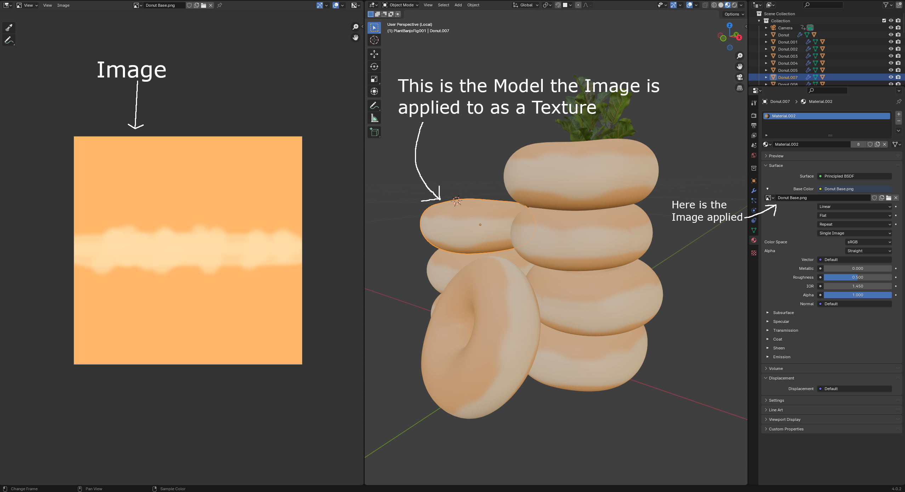
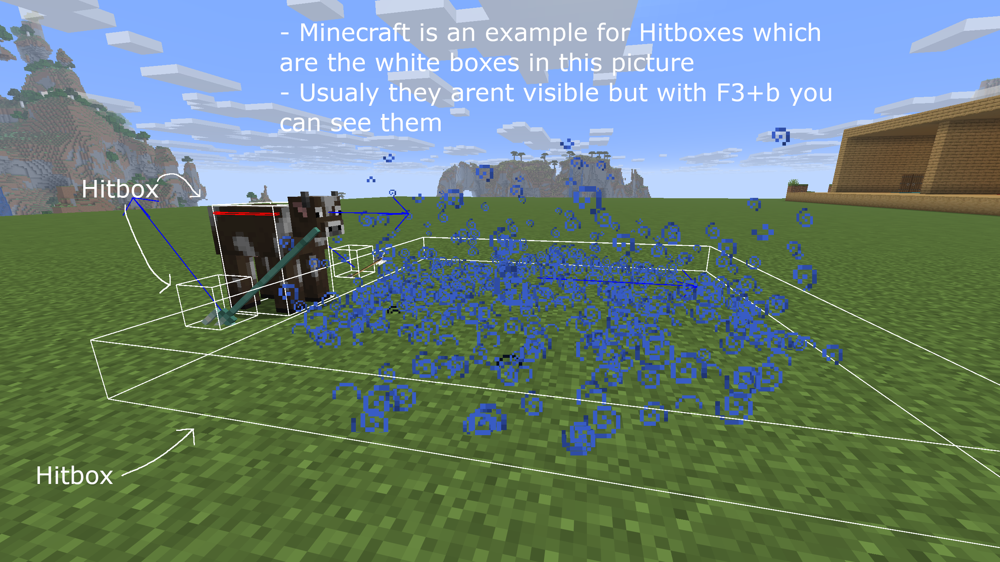
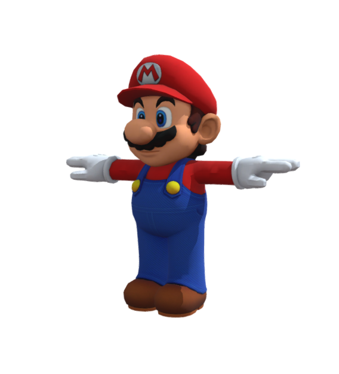
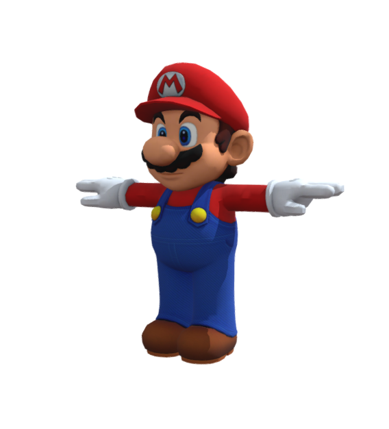
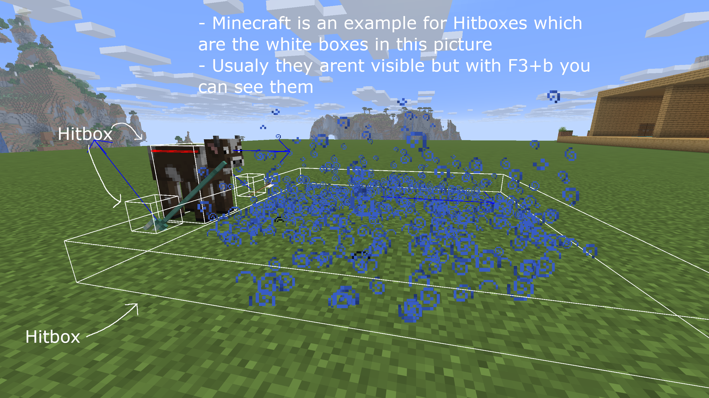
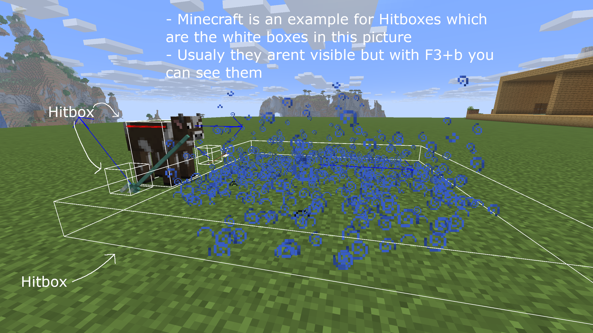

Die Spielschleife ist die Kernstruktur eines Spiels. Sie ist ein sich wiederholender Zyklus, der das Spiel kontinuierlich aktualisiert und auf dem Bildschirm anzeigt. Solange das Spiel läuft, läuft die Spielschleife ununterbrochen.
Ohne Spielschleife würde ein Spiel nicht auf Spielereingaben reagieren, Bewegungen aktualisieren oder Grafiken neu zeichnen.
Aktualisiert die Spiellogik (Bewegung, Physik, KI).
Zeichnet das aktualisierte Spiel in jedem Frame auf den Bildschirm.
Fast jedes Videospiel, egal wie einfach oder komplex, verwendet eine Art Spielablauf.
Was passiert innerhalb eines Spielablaufs?
Ein grundlegender Spielablauf folgt üblicherweise diesen Schritten:
Handle Input
Das Spiel überprüft die Aktionen des Spielers, wie z. B. das Drücken von Tasten oder das Bewegen eines Controllers.
Spielstatus aktualisieren
Das Spiel aktualisiert alles basierend auf den Eingaben und der Zeit:
Spielerbewegung
Feindliches Verhalten
Physik und Kollisionen
Punktestand und Spielregeln
Rendere (Zeichne) das Spiel
Das Spiel aktualisiert den Bildschirm mit den angepassten Positionen, Animationen und Grafiken.
Diese Schleife wiederholt sich viele Male pro Sekunde, oft 60 Mal pro Sekunde (60 FPS).
Arten von Spielschleifen
Es gibt verschiedene Möglichkeiten, einen Spielablauf zu strukturieren, abhängig vom Spiel und der Plattform.
Feste Zeitschrittschleife
Das Spiel wird mit einer festen Rate aktualisiert (z. B. 60 Aktualisierungen pro Sekunde), unabhängig von der Rechenleistung des Computers.
Dadurch werden Physik und Bewegungen konsistenter, die Implementierung kann jedoch schwieriger sein.
Variable Zeitschrittschleife
Das Spiel wird basierend auf der seit dem letzten Frame verstrichenen Zeit aktualisiert.
Dies ist einfacher umzusetzen, aber Bewegung und Physik können sich inkonsistent anfühlen, wenn sich die Bildwiederholrate zu stark ändert.
Viele moderne Spiele verwenden einen Hybridansatz, der beide Methoden kombiniert, um ein flüssigeres Spielerlebnis zu ermöglichen.
Beispiel einer einfachen Spielschleife (Pseudocode)
Hier ist ein sehr einfaches Beispiel dafür, wie eine Spielschleife aussehen könnte:
Diese Schleife läuft so lange, bis der Spieler das Spiel verlässt oder das Spiel endet.
Bildrate und Leistung
Die Bildrate (FPS – Bilder pro Sekunde) bestimmt, wie flüssig sich ein Spiel anfühlt.
30 FPS – Spielbar, aber weniger flüssig
60 FPS – Flüssiger und gängiger Standard
120 FPS+ – Sehr flüssig, wird in Hochleistungsspielen verwendet
Eine gut konzipierte Spielschleife trägt dazu bei, die Bildrate stabil zu halten und Verzögerungen oder Ruckler zu vermeiden.
Häufige Probleme mit Spielschleifen
Zu den häufigen Problemen, mit denen Entwickler konfrontiert sind, gehören:
Verzögerungen oder Ruckler aufgrund rechenintensiver Prozesse in der Schleife
Instabile Physik aufgrund inkonsistenter Zeitschritte
Eingabeverzögerung, falls die Eingabe nicht korrekt verarbeitet wird
Abschluss
Die Spielschleife ist das Herzstück jedes Videospiels. Sie steuert, wie das Spiel auf Spielereingaben reagiert, die Spielwelt aktualisiert und alles auf dem Bildschirm anzeigt. Zu verstehen, wie die Spielschleife funktioniert, ist ein entscheidender erster Schritt für jeden, der sich für Spieleentwicklung interessiert.
Sobald man den Spielablauf verstanden hat, kann man sich fortgeschritteneren Themen wie Physik-Engines, Animationssystemen und Spieloptimierung zuwenden.
Delta-Zeit
Was ist Delta-Zeit?
Die Delta-Zeit (Δt) ist die Zeitspanne, die zwischen zwei Einzelbildern vergangen ist.
In Spielen wird die Delta-Zeit verwendet, um sicherzustellen, dass sich Bewegungen, Animationen und Physik auch bei Änderungen der Bildrate konsistent verhalten.
Anstatt zu fragen
„Wie viele Bilder sind vergangen?“
wir fragen
„Wie viel Zeit ist vergangen?“
Warum ist die Delta-Zeit wichtig?
Ohne Delta-Zeit:
Schnellere Computer → schnelleres Gameplay
Langsamere Computer → langsameres Gameplay
Mit Delta-Zeit:
Das Spiel läuft auf allen Geräten mit der gleichen Geschwindigkeit.
Die Bewegungen fühlen sich flüssig und fair an.
Die Physik verhält sich vorhersehbarer
Das Problem ohne Delta-Zeit
Stellen Sie sich einen Spieler vor, der sich pro Frame um 5 Einheiten bewegt:
Bei 30 FPS → 150 Einheiten pro Sekunde
Bei 60 FPS → 300 Einheiten pro Sekunde
Derselbe Code, aber völlig unterschiedliche Geschwindigkeit
Die Lösung: Delta-Zeit
Statt uns pro Frame zu bewegen, bewegen wir uns pro Sekunde:
Position += Geschwindigkeit × deltaTime
Der Aktualisierungsschritt ist nun zeitabhängig, nicht mehr framebasiert.
Delta-Zeit und die Spielschleife
Delta-Zeit passt direkt in die Spielschleife:
Zeit seit dem letzten Frame messen
Prozesseingabe
Die Spiellogik wird mithilfe der Delta-Zeit aktualisiert.
Rendern Sie den Rahmen
Dadurch wird die Delta-Zeit zu einem Kernbestandteil des Spielablaufs und nicht zu einem zusätzlichen Feature.
Häufige Probleme mit der Delta-Zeit
Sehr große Zeitdifferenzen (Verzögerungsspitzen) können dazu führen, dass Objekte springen.
Die Physik kann außer Kraft gesetzt werden, wenn die Delta-Zeit nicht begrenzt wird.
Viele Spiele begrenzen die Delta-Zeit auf einen Maximalwert.
Beispiel:
deltaTime = min(deltaTime, 0.05);
Abschluss
Die Delta-Zeit gewährleistet Folgendes:
Spiele fühlen sich konsistent an
Die Bewegung ist reibungslos
Leistungsunterschiede haben keinen Einfluss auf das Gameplay.
Zusammen mit der Spielschleife ist die Delta-Zeit eine der wichtigsten Grundlagen der Spieleprogrammierung.
Koordinatensysteme
Was ist ein Koordinatensystem?
Ein Koordinatensystem ist eine Möglichkeit, mithilfe von Zahlen zu beschreiben, wo sich etwas befindet.
In Spielen werden Koordinatensysteme verwendet, um Folgendes zu definieren:
Spielerposition
Feindliche Position
Kameraposition
Platzierung von UI-Elementen
Wenn ein Spiel die Koordinaten eines Objekts kennt, weiß es genau, wo es sich befindet.
Das Koordinatensystem, das den meisten bereits bekannt ist (2D-Grafik)
Ja, es ist im Grunde dasselbe wie in der Mathematik.
2D-Koordinatensystem:
X-Achse → links ↔ rechts
Y-Achse → nach oben ↔ nach unten
Beispiel:
(x, y) = (3, 2)
Das heißt:
3 Einheiten nach rechts
2 Einheiten höher
Das ist perfekt für 2D-Spiele (Jump'n'Runs, Top-Down-Spiele).
Wichtiger Unterschied: Bildschirmkoordinaten vs. mathematische Koordinaten
Mathematisches Koordinatensystem:
(0,0) liegt im Zentrum
Y steigt nach oben
Bildschirm-/Spielkoordinatensystem:
(0,0) befindet sich sonst oben links
Y steigt nach unten
Dies erklärt, warum „hoch“ in Spielen manchmal bedeutet, Y abzuziehen.
Koordinaten in Spielen (Praktisches Beispiel)
Stellen Sie sich einen Spieler vor bei:
playerPosition = (100, 250)
X = 100 → 100 Pixel von links
Y = 250 → 250 Pixel von oben
Spieler nach rechts bewegen:
x += 5
Spieler nach oben bewegen:
y -= 5
Ja, nach oben ist negatives Y. Das ist in Spielen normal.
3D-Koordinatensysteme
3D-Spiele fügen eine dritte Achse hinzu:
X → links / rechts
Y → nach oben / nach unten
Z → vorwärts / rückwärts (Tiefe)
(x, y, z)
Verwendet in:
FPS-Spiele
Open-world games
3D-Simulationen
Koordinatensysteme und die Spielschleife
Die Koordinaten werden in jedem Frame innerhalb der Spielschleife aktualisiert.
Beispiel:
Position += Geschwindigkeit × DeltaZeit
Das verbindet:
Spielschleife
Delta-Zeit
Koordinatensysteme
Häufige Fehler
Vermischung von Weltkoordinaten und Bildschirmkoordinaten
Vergessen, dass Y nach unten zeigt.
Objekte werden pro Frame statt pro Sekunde bewegt.
Abschluss
Koordinatensysteme ermöglichen es Spielen:
Objekte präzise platzieren
Bewegen Sie sie reibungslos
Kollisionen erkennen
Kameras und Benutzeroberfläche steuern
Ohne Koordinatensysteme könnten Spiele nicht existieren.
Eingabeverarbeitung
Die Eingabeverarbeitung beschreibt, wie ein Spiel Spielereingaben (Tastatur, Maus, Controller) empfängt und in Aktionen innerhalb der Spielwelt umsetzt. Beispiele für Spielereingaben sind das Drücken von „W“ zum Vorwärtsbewegen, der Leertaste zum Springen oder ein Mausklick zum Angreifen.
Grundgedanke
Auf den ersten Blick mag die Eingabeverarbeitung wie eine einfache Reihe von Wenn-Dann-Anweisungen erscheinen: Probieren Sie es selbst aus und drücken Sie W, A, S, D, um den roten Punkt zu bewegen.
if(key == "w"){moveUp();}
if(key == "s"){moveDown();}
if(key == "d"){moveRight();}
if(key == "a"){moveLeft();}
See the pseudocode example for how not to do it
constredPoint = document.getElementById("red_point_to_move");conststep = 0.2;letx = parseFloat(redPoint.getAttribute("cx"));lety = parseFloat(redPoint.getAttribute("cy"));document.addEventListener("keydown", (event) => {// naive if-statement movementif (event.key === "w") {y -= step; }if (event.key === "s") {y += step; }if (event.key === "a") {x -= step; }if (event.key === "d") {x += step; }// only updates position on first key press, no hold or multiple keysredPoint.setAttribute("cx", x);redPoint.setAttribute("cy", y);});
Während dies bei sehr kleinen Programmen funktioniert, wird es bei realen Spielen schnell unpraktisch.
Spiele benötigen flüssige Bewegungsabläufe, die gleichzeitige Bedienung mehrerer Tasten, die Möglichkeit zur Tastenbelegung, eine Pausenfunktion und die Unterstützung verschiedener Eingabegeräte.
Probleme, die Sie im obigen Code erkennen können:
- Das Gedrückthalten einer Taste setzt die Bewegung nicht fort.
- Mehrere gleichzeitig gedrückte Tasten werden nicht korrekt verarbeitet.
- Die Eingabe ist direkt an die Bewegung gekoppelt, was es schwierig macht, das Verhalten abhängig vom Spielzustand zu ändern.
- Es gibt keine Unterstützung für verschiedene Eingabegeräte (Controller, Maus).
- Funktionen wie Pausieren oder Deaktivieren der Eingabe sind schwer zu implementieren.
- Die Bewegungsgeschwindigkeit ist nicht unabhängig von der Bildrate.
- Es gibt keine Trennung zwischen Eingabeerkennung und Spiellogik.
- Komplexe Eingabeschemata oder Kombos sind schwer zu verwalten.
- Nicht skalierbar für größere Spiele mit mehr Aktionen.
- Es fehlt an Flexibilität für zukünftige Änderungen oder Erweiterungen.
- Die Delta-Zeit wird bei der Bewegungsberechnung nicht berücksichtigt.
- Der Kontext wird ignoriert (z. B. kann sich der Spieler in einem Menü nicht bewegen).
- Es gibt keine einfache Möglichkeit, Tastenbelegungen oder anpassbare Steuerelemente zu implementieren.
- Und wahrscheinlich noch viele weitere Probleme.
Wie die Eingabeverarbeitung in der Praxis funktioniert
Moderne Spiele unterteilen die Eingabeverarbeitung üblicherweise in drei logische Ebenen:
Rohdateneingabe – Erkennung der gedrückten Taste oder des gedrückten Knopfes
Eingangsstatus – Speichert, welche Eingänge aktuell aktiv sind
Spielaktionen – Verwendung der Eingaben zur Steuerung des Spiels
1. Rohdaten
Die Rohdateneingabe erfolgt durch das System oder den Browser. In dieser Phase
erkennt das Spiel lediglich, dass eine Taste gedrückt oder losgelassen wurde.
Hier finden keine Bewegungen oder Aktionen statt.
2. Input State
Anstatt sofort zu reagieren, speichert das Spiel den aktuellen
Eingabezustand. Dadurch weiß das Spiel, welche Tasten
gerade gedrückt werden.
keys["w"] = true; // key is pressedkeys["w"] = false; // key is released
Dadurch ist es möglich, mehrere Eingaben gleichzeitig zu verarbeiten,
z. B. diagonale Bewegungen oder Sprinten während der Bewegung.
3. Spielaktionen
Der Eingabezustand wird in jedem Frame der Spielschleife überprüft.
Das Spiel entscheidet dann, welche Aktionen ausgeführt werden sollen.
if (keys["w"]) {player.moveForward();}
Ob eine Aktion erlaubt ist, hängt vom Spielzustand ab.
Beispielsweise kann sich der Spieler möglicherweise nicht bewegen, während das Spiel pausiert ist oder eine Animation abgespielt wird.
Warum dieser Ansatz wichtig ist
Flüssige und gleichmäßige Bewegungen
Mehrere Tasten können gleichzeitig verwendet werden
Eingabe einfach deaktivieren (Pausenmenüs)
Unterstützt Tastenbelegung und Controller
Funktioniert korrekt mit Delta-Zeit und der Spielschleife
Zusammenfassung
Eingabeverarbeitung beschränkt sich nicht nur auf die Reaktion auf einen Tastendruck.
Stattdessen zeichnen Spiele die Eingaben des Spielers auf, verfolgen deren aktuellen Zustand
und verarbeiten sie in jedem Frame, um reaktionsschnelle und flexible
Steuerungen zu ermöglichen.
Hitbox: Unsichtbare Form, die für Kollisionen verwendet wird.


5. Werkzeuge und Formate
Sprites:
Werkzeuge: Photoshop, Aseprite, Piskel
Formate: PNG, GIF, SVG
Models:
Tools: Blender, Maya, 3DS Max
Formate: OBJ, FBX, GLTF
Grundlegende Logik
Grundlegende Logik ist die Basis dafür, wie Spiele (und Programme im Allgemeinen) entscheiden, was als Nächstes passiert. Es geht um Bedingungen, Entscheidungen und Konsequenzen. Im Grunde genommen bringt man seinem Spiel damit bei, wie man denkt.
Was ist Logik in Spielen?
In Spielen beantwortet Logik Fragen wie:
Kann der Spieler jetzt springen?
Hat der Feind den Spieler gesehen?
Ist diese Tür verschlossen oder unverschlossen?
Hat der Spieler gewonnen oder verloren?
Logik hat nichts mit Grafik oder Ton zu tun. Es geht um Regeln.
Bedingungen („Wenn dies, dann das“)
Das Herzstück der grundlegenden Logik sind Bedingungen.
Beispiele:
Wenn die Gesundheit des Spielers 0 beträgt → stirbt der Spieler
Wenn der Schlüssel gefunden wird → kann die Tür geöffnet werden
Wenn der Spieler die Sprungtaste drückt Und ist auf dem Boden → springen
Betrachten Sie die Bedingungen als Ja/Nein-Fragen, die Ihr Spiel ständig stellt.
Boolesche Logik (Wahr / Falsch)
Most decisions rely on booleans, which can only be:
WAHR
FALSCH
Beispiele:
isGrounded = true
hasKey = false
enemyAlerted = true
Diese Werte steuern, welche Aktionen zulässig sind.
Bedingungen kombinieren
Spiele überprüfen selten nur eine Sache.
Common logic combinations:
AND → Alle Bedingungen müssen erfüllt sein.
OR → Mindestens eine Bedingung muss erfüllt sein.
NOT → kehrt einen Zustand um
Beispiele in einfacher Sprache:
Der Spieler kann sprinten. if Ausdauer > 0 AND Die Sprint-Taste wird gedrückt gehalten
Alarmauslöser if Spieler wird gesehen OR Kamera ist gehackt
Tür öffnet sich if NICHT gesperrt
Spielstatus
Die Logik hängt oft vom aktuellen Spielstand ab.
Beispiele für Staaten:
Menü
Am Spielen
Pausiert
Spiel vorbei
Bestimmte Aktionen funktionieren nur in bestimmten Bundesstaaten:
Die Spielerbewegung funktioniert nur während des Spielens.
Die Schaltflächen verhalten sich im Menü anders als im Pausenmenü.
Dadurch werden Fehler und unbeabsichtigtes Verhalten verhindert.
Ursache und Wirkung
Gute Logik folgt klaren Ursache-Wirkungs-Regeln:
Spieleraktion → Logikprüfung → Ergebnis
Examples:
Spieler schießt → Munitionsvorrat sinkt → Gegner erleidet Schaden
Timer erreicht Null → Logik löst aus → Runde beendet
Diese Vorhersagbarkeit sorgt dafür, dass sich Spiele fair anfühlen.
Warum grundlegende Logik wichtig ist
Ohne solide Logik:
Die Bedienelemente reagieren nicht.
Überall tauchen Bugs auf
Systeme zerstören sich gegenseitig
Mit guter Logik:
Das Gameplay fühlt sich flüssig an
Die Regeln sind dem Spieler klar.
Komplexe Systeme werden handhabbar
In Short:
Logik ist das Entscheidungssystem eines Spiels.
Es steuert:
Was ist erlaubt
Wenn etwas passiert
Warum etwas passiert
Jedes hochentwickelte Spielsystem (KI, Physik-Interaktionen, Kampf, Benutzeroberfläche) basiert auf diesen einfachen logischen Regeln.

 



 
